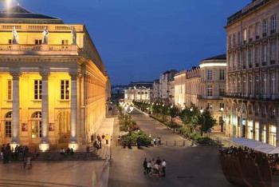

Conference location
Bordeaux
 Middleware 2014 will take place in the wonderful city of Bordeaux, which is located in the southwest of France, near the Atlantic coast. The city is characterized by its unique 18 th century heritage. Bordeaux is full of beautiful and historic buildings and has recently been acknowledged by UNESCO which has classified the city center as a World Heritage Site. Bordeaux is also well-know to be the capital of wine.
Middleware 2014 will take place in the wonderful city of Bordeaux, which is located in the southwest of France, near the Atlantic coast. The city is characterized by its unique 18 th century heritage. Bordeaux is full of beautiful and historic buildings and has recently been acknowledged by UNESCO which has classified the city center as a World Heritage Site. Bordeaux is also well-know to be the capital of wine.
Transport
In the southwest of France, 45 mn from the ocean, Bordeaux is easily reachable by plane and train. The international airport of Bordeaux offers many connections to the rest of the world through three of the biggest european hubs: London, Paris, and Amsterdam. The airport of Bordeaux is served by the major international airlines as well as by several low-cost companies. Moreover, the airport of Bordeaux is less than 30 minutes from the city center and the conference location.
By plane

With its international airport, Bordeaux is connected to the rest of the world through 4 of the biggest european hubs:
- Paris (at least 5 flights per day)
- Amsterdam (at least 2 flights per day)
- London (at least 2 flights per day)
- Lisbon (at least 1 flight per day)
To come from the Bordeaux airport to the center of Bordeaux, you can use either:
- a city bus (40 minutes, but the cheapest way)
- a shuttle bus (30 minutes)
- a taxi (20 minutes).
More information on how to go to the center of Bordeaux is available here
By train
The Bordeaux train station is connected to Paris by the High Speed Train (TGV), in 3 hours (25 trains/day). The city centre is linked to the train station by direct tramway. You can also go to Bordeaux by train from many European cities (such as Brussels, London, Luxembourg, Geneva, Stuttgart , Amsterdam, Frankfurt and Madrid), but expect a long trip. More information here.
By car
Bordeaux can be easily reached by car, because it is connected to many motorways. Nevertheless, expect a long trip because Bordeaux is not close to many other large french cities. The closest large city is Toulouse (2 hours drive), and Paris is at 5h30.
Conference location
The conference will be located in the city centre The Cité Mondiale. Located in the Chartrons, the 18th-century district of wine-merchants, in the centre of the city near the wharfs of the Garonne river, this convention centre houses a 4* Mercure hotel with 97 rooms, an auditorium of 300 seats, 1270 m2 of multi-purpose space, 10 committee rooms seating 20 to 238 persons, and one of the best views over Bordeaux from the top floor.
You can reach the Cité Mondiale conference center either using:
- The line B of the tramway, CAPC station (see on Google maps)
- The line C of the tramway, Paul Doumer station (see on Google maps)
The overall map of all Bordeaux tramway lines is available here.